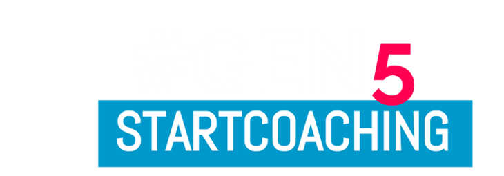

Programa de certificación de competencias en Coaching de Emprendimiento e Innovación
EL PROGRAMA
GEN es un programa de 10 meses, diseñado para personas que se sientan llamados a servir como entrenadores y facilitadores de aprendizaje de emprendedores y líderes de innovación. Los participantes podrán desarrollar competencias para iniciarse con efectividad y fluidez en la práctica de coaching para el emprendimiento y la innovación.
PERFIL DE UN COACH DE E & I
Ayuda a que los emprendedores se conecten con su propósito y talentos y derrumben los juicios, creencias y estados de ánimo que los limitan
Desarrolla experiencias de aprendizaje para incrementar el poder de los emprendedores para gestionar su emprendimiento
Inspira a las comunidades a conectarse con las narrativas del mundo que abren más posibilidades para un emprendimiento más ético e innovador.
Diseña y crea ecosistemas abiertos para el florecimiento de la innovación
ENFOQUES DE APRENDIZAJE

Aprendizaje activo
El aprendiz es el centro del proceso de aprendizaje. Cada participante parte de su propia experiencia y desde allí se inicia su proceso. Los participantes recorren el camino, en el que luego ellos acompañarán a sus aprendices.

La metáfora del viaje
Diseñamos el proceso de aprendizaje como un viaje de descubrimiento y transformación personal. Como todo viaje, tendremos un puerto de embarque y estaciones con cosas que descubrir. En cada estación tendremos desafíos que nos llevarán a procesos de descubrimiento. Habrán descubrimientos en el mundo externo, pero también tendremos que descubrir cosas en nuestro mundo interno.

Los desafíos
Nuestro programa no tiene “tareas para la casa” ni entregas de trabajos escritos… sino que se basa en desafíos. Los desafíos son aplicaciones concretas y prácticas de lo que se está aprendiendo en la vida real. Los desafíos se evalúan por el impacto que produce en la realidad.

Los laboratorios de aprendizaje
En vez de clases magistrales, nuestra metodología se basa en laboratorios de aprendizaje. Estos laboratorios son conversaciones de coaching donde evaluamos los resultados de la aplicación de los desafíos de los participantes en la vida real, la forma en que estamos aprendiendo y conversamos sobre los obstáculos nos frenan a aprender más rápido.

Espacio virtual de aprendizaje
Todas las clases del programas serán virtuales y estarán disponibles para verlas en cualquier lugar, en cualquier momento y las veces que quieras. Los espacios presenciales, como las conferencias, están diseñadas para generar los contextos y los espacios emocionales que habilitan y empoderan el aprendizaje.